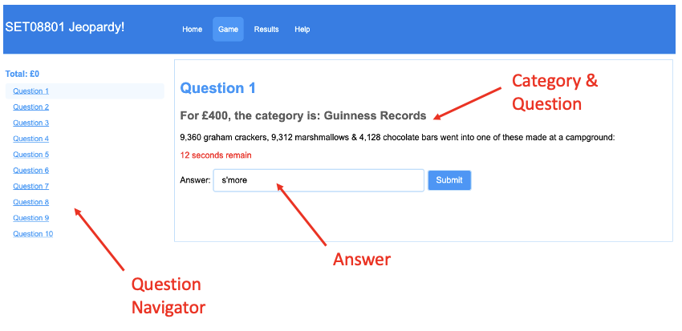
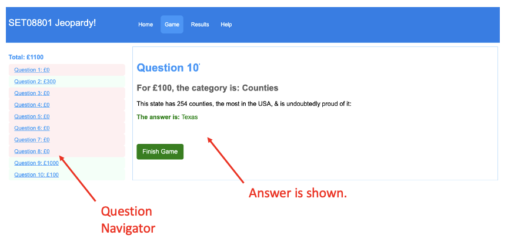

Playing the Game
SET08801 Jeopardy! uses a large database of questions so that the game will be challenging, fun, and educational. An Internet connection is required for the game to function correctly. To understand the game rules and process, please the guide below.
Game Layout

Each question will present a random category and prize amount (£). You simply provide your answer in the text box. Entries are not case-sensitive. It is important to note, you have 30 seconds for each question.
Playing the Game

As you progress through the game, the question navigator will be updated with the winning amount. After 10 questions are answered, the game will end as shown above.